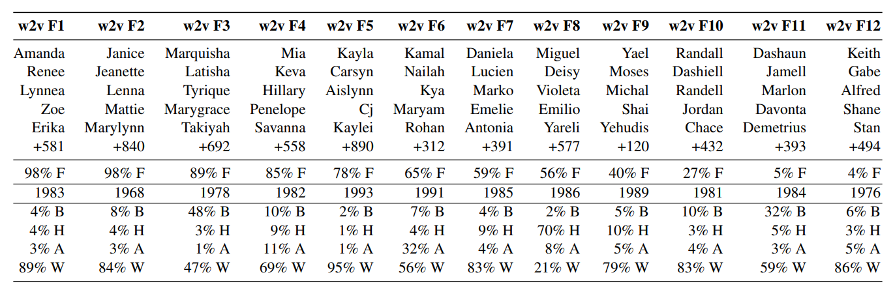
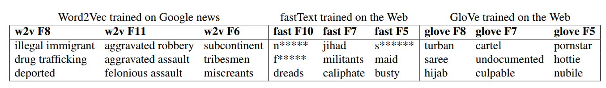

(02/2019: Basilica) The Unreasonable Effectiveness
of Deep Feature Extraction
Embedding:
anything which maps an object in one space to
point in a vector space, e.g. Word2Vec . Usually, either that the second
space is lower-dimensional, or that objects which are similar by some
important metric are close together in the second space.
Razavian et al: CNN Features
Off-the-Shelf
-
Took a deep neural network
(OverFeat), pretrained it on millions of images (ImageNet), and then
repurposed it as a feature extractor.
-
Fed the extractor with the
Oxford Flowers dataset, and fed resulting features into an SVM
-
ImageNet
has general pictures like dogs, strawberries, etc.
-
Oxford
Flowers has fine-grained distinctions between different flower types
-
They achieved better results
than top-performing baselines!
Baidu Research
found that after a certain point, it takes a lot of
data to meaningfully improve your results (the error rate improves extremely
sub-linearly)
Implication:
if you take this huge network pretrained on a
billion images, repurpose it as a feature extractor, and use it to train a
simple linear model on your dataset - it's almost as good as finetuning the
whole thing.
Crucially, it
significantly outperforms training a neural network directly on your dataset!
Why
are embeddings poised to become a big deal?
-
Embeddings have short
train-test cycles.
-
You can change the model
producing the embedding, or change the model consuming the embedding,
w/o worrying about the other one.
-
Embeddings provide an easy
way to use deep learning to improve existing models (legacy
infrastructure)
What
still needs to happen?
-
Big Tech currently produces
the best pretrained networks. Today's good PR is tomorrow's competitive
advantage?
-
Running state of the art
pretrained networks with reasonable latency requires specialized
hardware.
-
There's no good pretrained
network for things like product images or typo-filled support requests.
(02/2019: Microsoft Research) What are the biases in
my data?
Impact:
word embeddings might be naively used to match
resumes to jobs, a methodical way of checking training data for biases
Method:
use the geometry of the word embeddings
(Word2Vec,
FastText, GloVe) to find
parallels between clusters of lower-case words and first names.
We recover gender
groups but also a number of other biases including religious, ethnic, age,
and racial groups emerge.

Ask an embedding:
-
Man ->
woman; doctor -> ? Nurse!
-
Man ->
woman; computer programmer -> ? Homemaker!
-
Kosher,
hummus, and bagel? [Israeli name cluster]!
It gets worse…

(09/2018: Uber) Forecasting at Uber - An Introduction
Motivations for forecasting:
-
Predict
user supply and demand in a spatio-temporal fine granular fashion to
direct driver-partners to high demand areas before they arise
-
Find the
sweet spot between hardware under-provisioning (erodes user trust) and
over-provisioning (costly)
-
Understand
the marginal effectiveness of different media channels while controlling
for trends, seasonality, and other dynamics (e.g., competition or
pricing)
What makes forecasting (at Uber) challenging?
-
Uber has
many actors of diverse behavior and interests, physical constraints, and
unpredictability.
-
Physical
constraints, like geographic distance and road throughput move
forecasting from the temporal to spatio-temporal domains.
What are the right tools for the job?
-
Model-based forecasting
-
Strongest
choice when the underlying mechanism of the problem is known
-
Statistical Model
-
When the
underlying mechanisms are not known or are too complicated, e.g., the
stock market, or not fully known, e.g., retail sales
-
Machine Learning Models
-
When
interpretability is not a requirement
(02/2019: Google AI) Real-time Continuous
Transcription with Live Transcribe
We
implemented an on-device neural network-based speech detector, built on our
previous work with AudioSet. This network is an image-like model, similar to
our published VGGish model, which detects speech and automatically manages
network connections to the cloud ASR engine, minimizing data usage over long
periods of use.
Accessibility
UX Decisions:
-
Smartphone form factor
because of the sheer ubiquity of these devices and the increasing
capabilities they have.
-
Loudness and noise indicator
of their current environment.
-
The inner
brighter circle, indicating the noise floor, tells a deaf user how
audibly noisy the current environment is.
-
The outer
circle shows how well the speaker’s voice is received.
-
Encoding confidence levels
of the transcription (e.g. yellow = high, green = medium, blue = low,
white = awaiting context) was found to be distracting to the user
without providing conversational value.
(01/2019: FB Research) A New Predictive Model for
More Accurate Electrical Grid Mapping
A
Computer Vision approach did not work because:
-
The shape
and orientation of poles and structures are so diverse in form that even
large image training sets were insufficient to generate high-quality
labeled examples.
-
Vegetation,
shadows, and nearby similar infrastructure made it hard to correctly
identify MV grid lines.
We
decided to instead try a predictive modeling approach, using indicators of
electrification, mainly based on nighttime radiance:
-
Assumptions:
-
All
settlements that generate detectable lighting are on the grid
-
All
settlements that do not are off the grid.
-
Mitigated assumptions by
using local data,
e.g. electrification status for all schools in
Nigeria.
We
corrected for reflected starlight and moonlight, clouds, wildfires,
lightning, oil well flares, fishing boats, bonfires, and reflected city
lights using NASA's monthly high-res images. The points that remained were
assumed to be settlements with a connection to grid infrastructure, in the
form of an MV distribution line.
The grid
estimation algorithm, a modified version of Dijkstra’s shortest path
, seeks to make connections in the most efficient way
possible. Using known electrical grids as templates, grid paths are
encouraged to follow roads, avoid water, and prefer shorter paths.
(01/2019: AirBnB) Discovering and Classifying In-App
Message Intent
We
needed an algorithm that can detect distinct underlying topics, and decide
which one is the primary one based on probability scores. ~13% of our target
messages have multi-intent.
Why
LDA instead of doc2vec or BERT?
-
LDA is a
probabilistic model, which gives a probabilistic composition of topics
in a message.
-
LDA
assumes each word is drawn from certain word distribution that
characterizes a unique topic, and each message can contain many
different topics. The word distribution allows human judgement to weigh
in when deciding what each topic means.
First,
we pilot labeled a small sample by having each message labeled by multiple
people to evaluate labeling quality. We then refined the label definitions
based off the inter-rater agreement for each intent label, and kicked off
formal labeling with a much larger data size.
We
keep a small portion of messages that are labeled by multiple reviewers so
that we could identify the limits in prediction accuracy that our model could
achieve due to human-level error.
Why
CNN instead of RNN?
Implementation
simplicity, reported high accuracy, and especially fast speed (at both
training and inference time).
Certain
preprocessing steps such as tagging certain information are especially
helpful in reducing noise as they normalize information like URLs, emails,
date, time, phone number, etc.

There
were two primary root causes for the misclassifications: human errors in
labeling and label ambiguity.
(12/2018: Google AI) Top Shot on Pixel 3
Top Shot captures
up to 90 images from 1.5 seconds before and after the shutter press,
selecting up to two alternative shots to save in high resolution
Given Top Shot runs
in the camera as a background process, it uses a hardware-accelerated
MobileNet-based single shot detector (SSD) so that it can use very little
power.
Our neural network
design detects low-level visual attributes in early layers, like whether the
subject is blurry, and then dedicates additional compute and parameters
toward more complex objective attributes like whether the subject's eyes are
open, and subjective attributes like whether there is an emotional expression
of amusement or surprise.
To test it, we
collected data from hundreds of volunteers, along with their opinions of
which frames (out of up to 90) looked best. This donated dataset covers many
typical use cases, e.g. portraits, selfies, actions, landscapes, etc.
We evaluated the
accuracy of each signal used in Top Shot on several different subgroups of
people (based on gender, age, ethnicity, etc.), testing for accuracy of each
signal across those subgroups.
02/2019:
(Apen Warr) Forget Privacy - You’re Terrible at Targeting Anyway
Everyone
loves collecting data, but nobody loves analyzing it later.
Dirty
secret of the ML movement:
almost everything
produced by ML could have been produced, more cheaply, using a very dumb
heuristic you coded up by hand.
Examples
of heuristics/algorithms that need no tracking and work better than 'ML'
recommendations:
-
DuckDuckGo
serving ads related to the thing that you were searching for
-
Steam
emailing me that the games on my wish list are on sale
-
Pandora's
hand-coded music genome project that recommends songs based on the
starter, and a few thumb ups/downs
ML
probably infers my gender, age, income level and marital status. After that
it sells me cars if I'm a guy, and fashion if I'm a woman. Not because all
guys like cars, but because some uncreative human said, "Please sell my
car to mostly men" and "Please sell my fashion items mostly to
women.
There
really are some excellent uses of ML out there, for things traditional
algorithms are bad at, like image processing or winning at strategy games.
01/2019: (Microsoft Research) Traffic Updates -
Saying a lot while revealing little
Problem:
Naively soliciting speed reports from all
eligible vehicles reduces privacy and increases bandwidth requirements. Let's
reduce the # of speed reports.
Technique:
Markov Random Field trained with historical
speed data so that it can exploit probabilistic dependencies among traffic on
different roads. Each vehicle gets fitted with one.
Key
tenets:
-
If traffic is moving like it
normally does (90% of the time), everyone can assume that everything is
normal.
-
If traffic is abnormal, only
a few vehicles (8%) on a road segment need to report it. The model can
infer the value of its speed report to the network.
-
A speed report from one road
can be used to infer speeds on other roads due to correlations between
speeds on different roads.
01/2019: (Microsoft Research) Bias in Bios
Used
397,340 online biographies. Predicted the occupation stated in the first
sentence using the rest of the biography using various semantic
representations: bag-of-words, word embeddings and deep recurrent neural
networks. Accuracy ranged from .78 to .85, with DNNs topping the charts.
Similar
accuracies obtained after scrubbing explicit gender indicators. The TPR
gender gap reduced (w/ little tradeoff of performance for fairness). Still:
-
They were
able to predict gender with .68 accuracy
-
Some
occupations have significant TPR gender gaps
-
There's
still +ve correlation between TPR gender gap for an occupation and the
gender imbalance in that occupation.
-
The Leaky Pipeline:
if a
classifier compounds existing gender imbalances, then the
underrepresented gender will, over time, become even further
underrepresented.
Top 5
ML mistakes that the models rectify after gender indicators are swapped:
-
Men:
attorney
instead of paralegal, architect instead of interior designer, professor
instead of dietitian, photographer instead of interior designer, teacher
instead of yoga teacher.
-
Women:
rapper
instead of model, pastor instead of teacher, SWE instead of professor,
surgeon instead of professor, surgeon instead of physician.
01/2019: (Microsoft Research) Creating Better AI
Partners
The
success of human-AI teams in decision-making relies on the human partner to
create a mental model and to learn when to trust (or override) the machine.
Proposition:
augment the loss function with a (weighted)
dissonance factor that measures divergence of models for data points where
the old model was correct, penalizing new introduced errors. Price: loss in
overall accuracy.
ML is not, by default, fair
Training data can
be biased, whether the bias features are explicit or implicit. And companies
hide their data under 'trade secret'…
Valid statistical
patterns in large groups may not hold for minorities, e.g.
diverse names -> fake profiles for white
population, not so for other ethnic groups.
Humans tend to be
biased in different ways, thus might cancel out. Algorithms do not.
Even if subgroups
admit simple classifiers, arbitrary combination of linear classifiers is
computationally more expensive. Also, sometimes the law prohibits such
segregation.
Source: SoECS meeting
Minorities vs. ML
Minorities,
by definition, have fewer data available. Increasing data size may further
disadvantage minorities while still increasing model accuracy.
COMPAS algorithm for predicting crime propensity.
Blacks are 2x as likely as whites to be labelled high risk. Accuracy rates
for Blacks and Whites were both 60%.
Cornell
Study:
A risk score could either be equally
predictive or equally wrong for all races, but not both.
That is
mathematics, not opinion.
Source: SoECS meeting
06/2018 HN: (Ben Evans) Ways to think about ML
People
tend to humanize future tech. We did not get robotic servants. We got washing
machines that don't understand clothes nor dishes.
Think
of ML as enabling technology layers. ML helps us find implicit and
probabilistic patterns in data. Questions that were previously hard to
explain to computers.
ML
gives you millions of interns that can do one discrete task at scale, e.g.
find all suspicious emails.
But some fields
are narrow enough and deep enough,
e.g. Alpha
Go,
that we can give ML a cost function. Looking at all of the data
yields insights that no human ever could.
Relational
Databases allowed cross-referenced queries a routine thing to do,
e.g. find all customers that bought X and live in
city Y.
Record-keeping systems were turned into business intelligence
systems.
Right
now, everything has relational databases and no one cares. We might achieve
the same with ML in a couple of years.
Demos
have voice and image recognition, but what would a normal company do with
that?
-
Deliver better optimizations
on current questions,
e.g. Instacart routing personal shoppers
through grocery stores at a 50% delivery improvement.
-
Make new kinds of queries,
e.g.
lawyer searching for 'anxious' emails in addition to keyword searches.
-
Opening up image and voice
to analysis. Previously, computers only understood text and
numbers.
07/2018: Edge Computing at Chick-fil-A
Restaurants
usually use a spreadsheet with historical sales data to predict how much food
to pre-cook by the hour. Overcook and waste, or undercook and make customers
wait longer.
Chick-Fil-A has centrally trained ML models that are deployed to Kubernetes
clusters at the restaurants. They can now feed in live data for more accurate
predictions at a low cost.